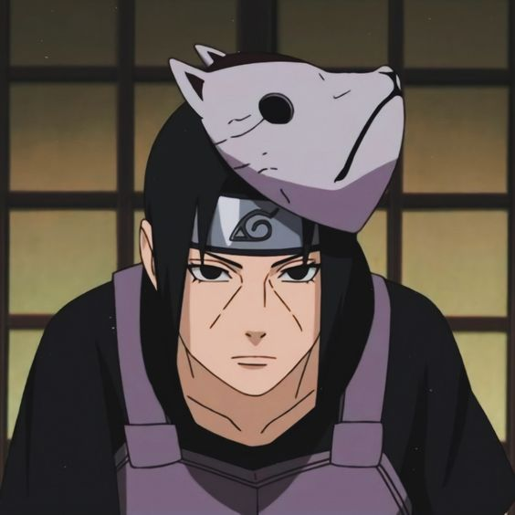

Itachi Uchiha
Itachi nació dentro del Clan Uchiha, hijo mayor del líder del
clan Fugaku Uchiha y de su esposa Mikoto Uchiha. Él siempre fue
considerado y elogiado como el mejor en su generación, un genio
por encima de todos los demás. Incluso sobrepasaba las
expectativas de un miembro experto del Clan Uchiha. Sin embargo,
ni siquiera su familia, amigos o profesores lo podían entender.
Cuando solo tenía cuatro años, Itachi ya había sido testigo de la
perdida de muchas vidas debido a la Tercera Gran Guerra Mundial Shinobi,
que emocionalmente lo traumatizó y lo convirtió en un pacifista.
A los 7 años, se graduó de la Academia de Ninjas como el primero en su
clase después de solo un año, dominar elSharingan a la edad de ocho años
y pasar los exámenes Chunin a los 10 años, y se convirtió en capitán ANBU
a los 13 años.
Él fue muy elogiado por su padre, que veía el futuro de la familia en Itachi,
por lo que descuidó a su hijo menor,Sasuke Uchiha. Sin embargo, durante este
tiempo Itachimostró gran afecto hacia su hermano pequeño, e incluso animó a su
padre para venir a la ceremonia de Inscripción deSasuke a la Academia, algo que
su padre había olvidado diciendo que tenía una importante misión para
establecer aItachi a las filas ANBU.
Cuando el Clan Uchiha comenzó a planear el derrocamiento de Konoha,
Itachi, como ANBU, recibió el encargo de espiar a la aldea. Sabiendo
que un golpe de Estado sólo conduciría a una nueva guerra ninja, Itachi
comenzó a espiar a los Uchiha en su lugar, transmitiéndole información
al Tercer Hokage y a los otros ancianos de Konoha. Durante este tiempo
él comenzó a actuar de forma extraña, ya que no asistía a las reuniones
del clan, hablando en contra del clan y considerado el principal sospechoso
por el asesinato de su mejor amigo, Shisui Uchiha, que se ahogó en el Río
Nakano. Debido a esto el clan perdido sus esperanzas en Itachi, y su padre
comenzó a cambiar su enfoque a Sasuke en su lugar. Mientras tanto, los intentos
del Tercer Hokage de negociar un final pacífico de las hostilidades entre las dos
partes están resultando ineficaces así, contra los deseos del Tercero, Danzo
Shimura y el Consejo de Konoha le ordenó a Itachi acabar y exterminar a todo el
Clan Uchiha.
Antes de realizar su misión secreta, Itachi descubrió la existencia de Madara
Uchiha (el cual en realidad era Tobi y no Madara), que estaba tratando de
reavivar las llamas de la guerra de Konoha. Allí los dos hicieron un trato,
en donde el supuesto Madara a cambio de no atacar de nuevo a Konoha Itachi se
ofrecía a cumplir su venganza contra el Clan. El ninja estuvo de acuerdo.
Itachimató a su clan entero durante la noche, evitando a Sasuke, porque su
hermano era para él más importante que Konoha. Por eso actuó como el villano,
diciendo que mato a su familia inocente sólo para poner a prueba sus habilidades.
Antes de huir de la aldea como un traidor incito a su hermano a odiarlo y a que
obtuviera más poder para que un día se vengara de él.
Sasuke intento atacarlo por lo que despierta su Sharingan por primera vez,
pero Itachi logro esquivar sus ataques. Cuando Itachi estaba recogiendo su
Banda Ninja la cual se le había caído, él derrama una lágrima frente a su hermano.
Luego procedió a incapacitar a Sasuke, quien despertó en el hospital recordando todo
lo que quería que él hiciera. Desde ese momento Sasuke juro vengarse de él y poder
re-establecer la gloria del Clan Uchiha. Itachidejó el pueblo como un traidor.
Según Tobi, Itachi también tenía una novia, a quien mató durante la Masacre del Clan Uchiha.
Sabiendo que Konoha todavía quieren eliminar a Sasuke, Itachi le pidió alTercer Hokage mantener a salvo a Sasuke.
También amenazó a Danzo de no dañar a Sasuke o revelaría los secretos de Konoha a los países enemigos.
La seguridad de Sasuke estaba asegurada, despues, Itachi volvió a su plan original de llegar a ser famoso
por su Masacre del Clan Uchiha.
Itachi se unió a Akatsuki con el fin de mantener un ojo en la organización, junto con el supuesto Madara,
en caso de que alguna vez actué en contra de Konoha, mientras que espera su muerte a manos de Sasuke.
Como un miembro de Akatsuki, Itachi se acercó a Orochimaru, en donde el último intento robar su cuerpo para
obtener el Sharingan. Itachi lo atrapo en un genjutsu y le cortó la mano izquierda, como castigo, obligando
a Orochimaru a huir de la organización. Itachi se asoció con Kisame Hoshigaki, que en un principio recibió
amenazas después de que éste trató de intimidarlo. Sin embargo, finalmente se convirtió en buenos socios para
compartir el vínculo común de haber traicionado a las personas más cercanas a ellos. En algún momento después
de unirse a Akatsuki y queOrochimaru huyera, Itachi ayudó a reclutar a Deidara a golpes en una batalla
utilizando sólo genjutsu, a la queDeidara juró venganza contra Itachi, incluso entreno su ojo y su jutsu
para vencerlo.
En algún momento, Itachi contrajo una enfermedad mortal. Se mantenía vivo a través de diversos medicamentos y
pura "fuerza de voluntad", con la esperanza de vivir lo suficiente para morir a manos de Sasuke. De esta enfermedad
no se supo hasta que Tobi la menciono pues en sus apariciones en la serie no mostró ningún síntoma, exceptuando
la pelea con Sasuke.
